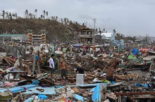
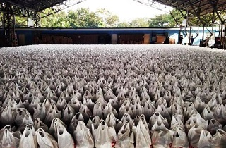
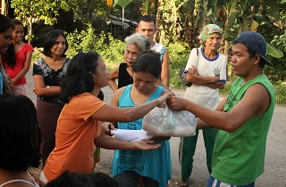

Ondoy Relief Operations:
We witnessed the devastation of Typhoon Ondoy especially on key parts of Luzon to Visayas and everyone at the places struck by Typhoon Ondoy seemed all but hopeless. Even as we got there, we knew that the people were clinging more unto their despair rather than hope. We knew that by the time official military relief operations came it would be a little over too late as we saw
children starving on the sideroads and most of the adults just clinging unto the destroyed homes, hoping to salvage what they can to ease the physical remainders of their daily lives. I could just feel nothing but
sympathy over the people there and my heart seemed more prepared to face them especially when I know at the point in time I would be there to give hope.
Read More of Ondoy Relief Operations



Yolanda Relief Operations:
The Typhoon Yolanda brought heavy destruction upon central Visayas as the internationally acclaimed most powerful typhoon ever recorded for the year came to land in Philippine borders. Houses and buildings were brought down by the strong gusts of the wind and the strength of the heavy downpour and it was recorded that it took not just one night for the storm to pass on to the cities at central Visayas
and some cities along the eastern and western coasts of Visayas. We knew the victims lost many of their hard-earned belongings not to mention the fact the number of dead people kept rising in every day and more and more missing people are reported to the patrol units at Visayas. The government leading the people seemed to lost all hope also as "State of Calamity" had been declared to many states in Visayas affected by the typhoon.
Read More of Yolanda Relief Operations